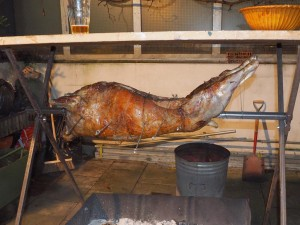
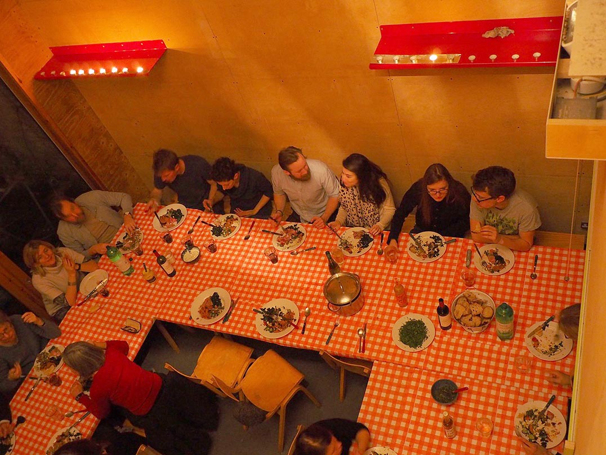

Christmas Party 2014
Tuesday, February 3rd, 2015Christmas Party 2014
On 17 December last year, 28 of us – members plus ones – gathered for our annual Christmas meal, made for the first time on site.

The double-height space of unit 3, recently vacated and awaiting its new incarnation as a workshop-cum-office, became, with hastily assembled benches and an assortment of tables, a temporary staff canteen. Much effort was made: we nibbled on toasted almonds and black olives while plates of buttered sourdough with home-cured gravadlax, made by Simon, did the rounds. A whole spit-roast lamb, cooked over hot coals in the front courtyard since early afternoon was tended by Mike, Simon and Jack. Accompaniments included pungent salsa verde made by Jack and Jeannetta; fresh broad bean, fennel, tomato, cucumber, feta, dill and parsley salad made by Robert J and Peter; a warming aubergine pilaf was made by Dan. We drank two different kitchen-brewed beers made between November and December by Olly and labelled by Peter. Duncan lit brandy and poured it over three of his rich and fruity home-made Christmas puddings, while Jeannetta’s delicious mince pies were consumed with relish and appreciation.

